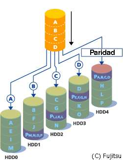

Tema 7: Administración de sistemas de ficheros
Programación y Administración de Sistemas
(2023-2024)
1 Objetivos y evaluación
Objetivos
Explicar la importancia de la administración del sistema de ficheros en la labor de administración de sistemas informáticos.
Explicar qué sucede en el sistema operativo cuando se montan y desmontan dispositivos en el sistema de ficheros.
Utilizar la herramienta
mount(yumount) para montar (y desmontar) sistemas de ficheros.Configurar los dispositivos de almacenamiento principales del sistema mediante el fichero
/etc/fstab.Explicar la necesidad del chequeo del sistema de ficheros y utilizar las principales herramientas de chequeo.
Explicar cómo funciona el sistema de journaling.
Enumerar los pasos necesarios para añadir un nuevo dispositivo de disco al sistema operativo.
Explicar las diferencias fundamentales entre los sistemas de ficheros
ext2,ext3yext4.Justificar la necesidad del uso de cuotas de disco en sistemas informáticos compartidos.
Configurar cuotas de disco para los distintos usuarios de un sistema GNU/Linux.
Justificar la necesidad del uso de arrays redundantes de discos (RAID) en sistemas informáticos.
Elegir el mecanismo RAID más adecuado: RAID0, RAID1 o RAID4/5.
Ejemplificar el mecanismo de redundancia para RAID basado en paridad.
Montar un sistema RAID por software en GNU/Linux.
Evaluación
Cuestionarios objetivos.
Pruebas de respuesta libre.
Tareas de administración.
NOTA: Como en otros temas, aquí veremos muchos parámetros de configuración que no tiene sentido memorizar, pero si hay que saber qué posibilidades tenemos en la administración de sistemas de ficheros.
2 Introducción
Introducción
Tareas asociadas al sistema de ficheros en GNU/Linux:
Permitir el acceso a ficheros locales y remotos.
Controlar los recursos que proporcionan: cuotas de disco, bloques o nodos-i libres, estadísticas de uso…
Proteger de posibles fallos o errores: RAID, copias de seguridad…
Controlar y proporcionar seguridad de los datos: propietarios, permisos…
Chequear (y corregir) el sistema de ficheros (en el momento, programado, etc. ).
Instalar y configurar nuevos dispositivos de almacenamiento.
3 I just want to add a disk!
I just want to add a disk!
Antes de saltar a la teoría vamos a hacer algo habitual: añadir un disco duro al sistema utilizando todo su espacio de forma corriente.
Más adelante entenderemos lo que estamos haciendo, podremos definir varias particiones, configuraremos RAID, cuotas, etc.
Receta disco (I)
Apagar el ordenador, conectar el disco y encender.
Usamos
lsblkpara identificar dispositivos de bloques y particiones. Ej./dev/sdb.Particionar el disco (
cfdisk(más fácil),parted,gparted,fdisk…):sudo fdisk /dev/sdb:
pas@debianpas:~$ sudo fdisk /dev/sdb
[sudo] password for pas:
Welcome to fdisk (util-linux 2.36.1).
Changes will remain in memory only, until you decide to write them.
Be careful before using the write command.
Device does not contain a recognized partition table.
Created a new DOS disklabel with disk identifier 0x11e147da.
Command (m for help): g
Created a new GPT disklabel (GUID: 01C5F77B-F13F-6348-B35F-2BD08E33989A).
Command (m for help): n
Partition number (1-128, default 1): 1
First sector (2048-204766, default 2048):
Last sector, +/-sectors or +/-size{K,M,G,T,P} (2048-204766, default 204766):
Created a new partition 1 of type 'Linux filesystem' and of size 99 MiB.
Command (m for help): w
The partition table has been altered.
Calling ioctl() to re-read partition table.
Syncing disks.Receta disco (II)
Nuestra nueva partición estará en
/dev/sdb1Crear el sistema de ficheros:
sudo mkfs -t ext4 -L etiqueta /dev/sdb1Crear un punto de montaje y montar (3 alternativas de identificación del dispositivo, el UUID lo podemos obtener de
lsblk -f.):
sudo mkdir /punto/montaje
sudo mount LABEL=etiqueta /punto/montaje
sudo mount /dev/sdb1 /punto/montaje
sudo mount UUID=a24457f7-5a17-4da0-a25b-c9f3f678780f /punto/montaje- ¡Listo!
Receta disco (III)
- ¿Puedes escribir con tu usuario normal?
- Si reinicias, ¿sigue ahí?
- ¿puedes montarlo sobre cualquier carpeta?
4 Montaje y desmontaje de sistemas de ficheros
Concepto montar/desmontar
En GNU/Linux, hay un único sistema de ficheros lógico (o una única “jerarquía de directorios”), en la que se organizan todos los dispositivos de almacenamiento disponibles.
Cada partición tiene su propio sistema de ficheros, con su directorio raíz y su jerarquía.
Montar un sistema de ficheros: añadirlo al sistema de ficheros lógico. Sus datos (desde su propia raíz) están disponibles a partir de un punto de montaje (p.ej.
/media/usb1).Desmontar un sistema de ficheros: el sistema de ficheros deja de estar disponible, dejándolo además consistente.
Los ficheros principales del SO están siempre disponibles desde la raíz del sistema de ficheros lógico (
/).En el arranque, se monta primero la partición correspondiente a dicha raíz (root) y luego cualquier partición auxiliar.
Concepto montar/desmontar
Herramienta mount
mount [opci] <FicheroEspecialBloque> <PtoMontaje>-t tipo-sftipo de sistema de ficheros.-rmontaje en modo sólo lectura.-wmontaje en modo lectura/escritura.-o opcionesMontajeopciones del proceso de montaje (nosuid,exec,remount, etc.).
umount <PtoMontaje> (ó <FicheroEspecialBloque>)desmontar un sistema de ficheros. Si está siendo utilizado (busy), no se podrá desmontar.
Monitorización con fuser y lsof
fusersaber qué ficheros se están usando y qué procesos los usan (f: fichero abierto para lectura,F: fichero abierto para escritura,c: directorio de trabajo,e: ejecutando el fichero,m: memoria compartida, etc.)lsofobtener un listado de todos los ficheros abiertos. Se puede filtrar por procesos, usuarios, directorios, etc.
fuser y lsof
$ fuser -mv /home # -m: ficheros montados; -v: verbose
USUARIO PID ACCESO ORDEN
/home: root kernel mount /home
javi 1152 F...m pulseaudio
javi 1158 F.c.m mate-session
...
javi 38094 f.c.. code
javi 38152 ..c.. code
javi 38153 ..c.. code
javi 38154 F.c.m code
javi 38198 F.c.. code
javi 38248 F.c.. java
...$ lsof # tardará en ejecutarse unos segundos
$ lsof -c code|wc -l
2252Fichero /etc/fstab
/etc/fstab: fichero con información sobre todos los sistemas de ficheros a montar (o ya montados) y las zonas de intercambio a activar.fi_especial pto tipo opciones dump_freq pass_numfi_especialfichero especial de bloques (/dev/...).ptodirectorio que sirve de punto de montaje (¿permisos?).tipotipo de SF (ext2,ext3,ext4,vfat,iso9660,swap,ntfs,nfs, etc.).Opciones para el proceso de montaje (separadas por “,” y sin espacios).
dump_freq“frecuencia del dump” para hacer una copia de seguridad de ese SF mediante el comandodump(no se usa).pass_numen tiempo de arranque, en qué orden hay que chequear los SFs (ejecutarfsckpara comprobar su estado).
Opciones de fstab
Opciones del fichero
/etc/fstab:defaultsrw,suid,dev,exec,auto,nouser,async.rwLectura-escritura (por defecto).roSólo lecturasuid/nosuidPermitido (o no) que los bits suid o sgid tengan efecto.auto/noautoMontar automáticamente (o no) (ejecutandomount -ase montan todos los automáticos siempre se ejecuta al arrancar el sistema).exec/noexecPermitir (o no) la ejecución de ficheros.usrquota, grpquotaActivar cuotas. Nota: anticuado en versiones modernas. Se activan como parámetros del sistema de ficheros contune2fs.uid=500, gid=100Propietario y grupo propietario de los ficheros del SF (si el SF no incorpora esta información o si se quiere cambiar).umask=137Permisos de los ficheros (en este caso, 640) (si el SF no incorpora esta información o si se quieren cambiar).devInterpretar ficheros especiales en el sistema de archivos.syncForzar a que todas las operaciones sean síncronas (puede disminuir el tiempo de vida de la unidad de disco).userpermite que los usuarios puedan montar el sistema de ficheros. Solo el mismo usuario podrá desmontarlo. Implica las opcionesnoexec,nosuidynodev.usersigual queuserpero cualquiera podrá desmontarlo.nouserSolorootpuede montar el SF.ownerpermite que un usuario pueda montar el sistema de ficheros, siempre que sea dueño del fichero de dispositivo. Implica las opcionesnosuidynodev.
Fichero /etc/fstab
Ejemplo de contenido del fichero /etc/fstab:
LABEL=/ / ext4 defaults,usrquota 0 1
/dev/sda3 /windows vfat defaults 0 0
/dev/dvd /media/dvd iso9660 noauto,owner,ro 0 0
/dev/fd0 /media/floppy vfat noauto,uid=500 0 0
/dev/sda4 /otrolinux ext3 defaults 0 2
/dev/sda2 swap swap defaults 0 0Al ejecutar
mountcomo root:mount /media/dvd: coge las opciones que faltan del fichero.mount -t iso9660 -r /dev/dvd /media/dvd: no las coge.
Si se asigna permisos de montaje a los usuarios (opciones
user,usersuowner), sólo pueden ejecutarmount /media/dvd(sin opciones).mount -a: montar todas las unidades que seanauto.Automontado de unidades:
udevydbus.
Nombres efímeros y UUID
Las referencias tipo
/dev/sda3tienen el problema de que no son robustas.Si se añade un disco nuevo, o incluso a veces al reiniciar,
/dev/sdapuede pasar a ser/dev/sdb.Por esto es más robusto utilizar identificadores únicos UUID y permanentes para particiones.
# Ejemplo de líneas de fstab usando UUID
# / was on /dev/nvme0n1p3 during installation
UUID=eca06da0-02e9-4c2b-9fe0-1fd03743502c / ext4 errors=remount-ro 0 1- Puedes ver varias alternativas para identificar discos y particiones en
/dev/disk/.
5 Comprobación del sistema de ficheros y disco
Concepto y herramientas de chequeo
Durante el arranque,
fsckoe2fsckchequearán la consistencia o estado del sistema de ficheros, detectando problemas e intentando repararlos.Se actúa sobre la estructura (no sobre el contenido):
Bloques que pertenezcan a varios ficheros.
Bloques que están marcados como libres, pero que se encuentran en uso.
Bloques que se encuentran marcados como en uso, pero que están libres.
Inconsistencias en cuanto al número de enlaces hacia un nodo-i.
Nodos-i marcados como libres, pero que están en uso.
Nodos-i marcados como en uso, pero que están libres.
Comprobación del sistema de ficheros
Para chequear un SF siempre debe estar desmontado o montado en modo de sólo lectura.
El SF raíz debe estar montado en modo de sólo lectura (el SF raíz no se puede desmontar, ¿por qué?).
. . .
- Si al arrancar el proceso de chequeo encuentra problemas que no puede solucionar, obliga al administrador a que realice el chequeo “a mano” ejecutando la orden
fsckoe2fsck(modo monousuario).
Comprobación del estado físico del disco
A veces, los errores en el sistema de ficheros están relacionados con un deterioro del disco duro.

S.M.A.R.T./SMART (acrónimo de Self-Monitoring, Analysis, and Reporting Technology) es un sistema de monitorización incluído en discos HDD y SDD.
Su función principal es detectar y notificar diversos indicadores de fiabilidad de la unidad para anticiparse a fallos de hardware inminentes.
Se pueden monitorizar y configurar notificaciones ante eventos:
6 Sistema de journaling
Journaling
Journaling: para evitar la verificación completa (con
fsck) de sistemas de ficheros de gran tamaño, que sería muy costosa, se implementa un modelo de control transaccional basado en logging (un diario).Las suboperaciones que modifiquen los metadatos y datos de un mismo archivo se agrupan en la misma transacción.
Si el sistema falla, las acciones parcialmente realizadas se deshacen o completan, recorriendo el log.
No se garantiza que el sistema esté actualizado al finalizar la recuperación, sino que es consistente.
Sistemas con esta filosofía: JFS (IBM), NTFS,
ext3/4y la gran mayoría de sistemas de archivos modernos.
Journaling: esquema
Fuente de la imagen Journaling FileSystem and Its 3 types
Por cada sub-operación que altera las estructuras de disco se escribe un registro en el log, que incluye las modificaciones en los buffers de i-nodos y de bloques.
Cuando se ha copiado a disco (log) el registro de commit, se empiezan a procesar realmente los buffers.
Después de una caída:
Se completan las transacciones commited.
Se descartan el resto de transacciones.
Obtener información de nuestro sistema de ficheros
Listado de discos y particiones:
sudo fdisk -lListado de puntos de montaje:
mountInformación sobre parámetros del sistema de ficheros:
sudo tune2fs -l /dev/sda2- Comprobar última comprobación y veces que se ha montado.
$ sudo tune2fs -l /dev/sda2 | grep Last\ c
Last checked: Fri Mar 5 11:59:50 2021
$ sudo tune2fs -l /dev/sda2 | grep Mount
Mount count: 303Intenta usar
fsckcon cada una de las particiones.¿Cómo podrías comprobar la partición raíz del sistema?
Obtener información del journal (curiosidad)
- Información sobre soporte journal en el sistema de ficheros:
sudo dumpe2fs /dev/sda2 | grep -i journal- Herramientas de depuración de sistemas de ficheros:
sudo apt install sleuthkitsudo debugfs -R 'logdump -S' /dev/sdb1
7 Creación de sistemas de ficheros
Pasos necesarios
Añadir un nuevo disco o SF:
Realizar la conexión física. Crear un fichero especial de dispositivo (si es necesario).
Consultar ficheros de bloques:
lsblkCrear las particiones:
fdisk(oparted).Crear sistema de ficheros:
mke2fs -t ext2 /dev/sdb3Etiquetar la partición usando
e2labelasigna una etiqueta al SF que se puede usar en el fichero/etc/fstab, en el campofi_especial, mediante LABEL=etiqueta.Crear el directorio que hará de punto de montaje.
Montar el nuevo sistema de ficheros.
Actualizar
/etc/fstabcon las opciones necesarias.
Diferencias entre ext2, ext3 y ext4
Diferencias
ext2,ext3yext4:ext3tiene el mismo formato queext2pero además es transaccional: añade un registro o journal que permite recuperar la consistencia tras una caída del sistema.ext4tiene un formato similar aext3, pero además incluye:Una extensión describe un conjunto de bloques lógicos contiguos de un fichero que también se encuentran contiguos en disco: muy útil para ficheros grandes.
Se retrasa la reserva de bloques de disco hasta que se va a escribir en él: mayor número de bloques contiguos en disco.
Implementa una herramienta de desfragmentación online,
e4defrag(capaz de funcionar mientras se usa el SF).Manejo de sistemas de ficheros y ficheros de mayor tamaño.
¿Qué sistema elegir?
ext2muy rápido en general, pero no tiene journaling. Se puede usar en un SF en el que se guardarán ficheros temporales.ext3buen rendimiento en general y journaling.ext4menor uso del CPU y mayor rapidez en los procesos de lectura y escritura queext3. Estándar de facto en Linux.
Hay muchas más opciones de sistemas de ficheros modernos. Particularmente interesantes son ZFS and Btrfs.
tune2fs
tune2fs Conocer y ajustar parámetros de un SF ext4/ext3/ext2.
-l dispositivo: Listar el contenido del superbloque del SF.-c max-mount-counts dispositivo: Establecer el nº de montajes máximo sin realizar un fsck.-i numero[d|m|w] dispositivo: Indicar el tiempo máximo entre dos chequeos.-L etiqueta dispositivo: Poner una etiqueta al sistema de ficheros.-m porcentaje dispositivo: Fijar el porcentaje de bloques reservados para procesos especiales (deroot). Por defecto, \(5\%\).
Parámetros del SF ext4
$ sudo tune2fs -l /dev/sda2
tune2fs 1.45.5 (07-Jan-2020)
Filesystem volume name: <none>
Last mounted on: /
Filesystem UUID: 1ccdff3f-4fa5-4222-85b9-81f463ac9da1
Filesystem magic number: 0xEF53
Filesystem revision #: 1 (dynamic)
Filesystem features: has_journal ext_attr resize_inode dir_index filetype needs_recovery extent 64bit flex_bg sparse_super large_file huge_file dir_nlink extra_isize metadata_csum
Filesystem flags: signed_directory_hash
Default mount options: user_xattr acl
Filesystem state: clean
Errors behavior: Continue
Filesystem OS type: Linux
Inode count: 2433024
Block count: 9701161
...8 Administración de volúmenes dinámicos
RAID y LVM
RAID: Array redundante de discos independientes.
Varias unidades de disco se ven como una sola unidad lógica.
Se pueden implementar por software o por hardware.
LVM (Logical Volume Management) : agrupar las particiones de uno o distintos discos en volúmenes. Permite redimensionar y mover particiones.
RAID y sistemas de ficheros contemporáneos
La mayoría de sistemas de ficheros necesitan una implementación a parte (hardware o software) de LVM sobre la que construir un RAID.
Los sistemas de ficheros ZFS, Btrfs o XFS están diseñados para integrar distintos dispositivos físicos como parte del sistema de ficheros sin gestores LVM externos.
Al ser este soporte nativo y a medida de estos sistemas de ficheros el rendimiento y robustez es mayor. Para más información ver RAID-Z en Wikipedia.
RAID 0
RAID nivel 0:
Expande la información en diversos discos, que se ven como un único SF.
Aumenta el espacio según el número de discos usado.
Se consigue E/S paralela en lecturas y escrituras, siempre que los bloques a tratar no sean del mismo disco.
No hay redundancia de datos.
RAID 1
RAID nivel 1:
Se utilizan dos o más discos duros, que forman un único SF (SF replicado en varios discos).
Son discos espejos (todos guardan la misma información).
SI hay redundancia de datos.
Las lecturas pueden ser en paralelo, las escrituras no.
Cuando uno de los discos falla, el sistema sigue trabajando con el otro sin problemas.
La recuperación de un disco es transparente al usuario.
RAID 4/5
División de los datos a nivel de bloques.
RAID 4: Mínimo 3 discos duros, de los cuales 1 almacenará la paridad de los otros discos, que son usados para datos.
Problema: el disco con paridad es un cuello de botella. RAID 5: repartir paridad entre todos los discos.
Se consigue un dispositivo de almacenamiento más grande.
SI hay redundancia de datos.
Lecturas y escrituras en paralelo.
RAID 5 ofrece la mejor relación rendimiento-coste en un entorno con varias unidades.

Paridad: cálculo
Paridad: cada vez que se escriben datos, se calcula el XOR bit a bit (1 número de unos impar, 0: número de unos par) de los bloques implicados en cada cada disco.
Basada en operaciones XOR:
| Disco 1: | 00101010 | (Datos) |
| Disco 2: | 10001110 | (Datos) |
| Disco 3: | 11110111 | (Datos) |
| Disco 4: | 10110101 | (Datos) |
| Disco 5: | 11100110 | (Paridad) |
Paridad: recuperación
Paridad: Si uno de los discos falla (p.ej. el disco 4), el contenido se puede restaurar a partir de la paridad:
| Disco 1: | 00101010 | (Datos) |
| Disco 2: | 10001110 | (Datos) |
| Disco 3: | 11110111 | (Datos) |
| Disco 5: | 11100110 | (Paridad) |
| Disco 4: | 10110101 | (Datos) |
9 Cuotas
Concepto de cuotas de disco
Las cuotas de disco permiten limitar el número de bloques y/o ficheros (nodos-i) que un usuario puede usar en una partición (también se pueden establecer para grupos de usuarios).
Hay dos tipos de límites:
Límite hard: el usuario no puede sobrepasarlo. Si lo hace, ya no podrá usar más bloques o crear más ficheros.
Límite soft: es inferior al límite hard y se puede sobrepasar durante cierto tiempo, siempre que no se alcance el límite hard.
Periodo de gracia: tiempo durante el que se puede sobrepasar el límite soft. Se informa al usuario de que ha superado el límite y que debe liberar espacio o nodos-i (ficheros).
- Los periodos y los límites se establecen, de forma independiente, para bloques y nodos-i.
10 Receta RAID + cuotas
Para finalizar el tema vamos a poner todo junto montando este sistema en la siguiente presentación.

11 Referencias
Referencias
Evi Nemeth, Garth Snyder, Trent R. Hein, Ben Whaley y Dan Mackin. Unix and Linux system administration handbook. Capítulo 20. Storage, Addison-Wesley. 5th Edition. 2018.
Aeleen Frisch. Essential system administration. Capítulo 10. Filesystems and disks. O’Reilly and Associates. Tercera edición. 2002.
Ext4 Design. https://ext4.wiki.kernel.org/index.php/Ext4_Design
Anatomy of the Linux virtual file system switch. https://developer.ibm.com/technologies/linux/tutorials/l-virtual-filesystem-switch/
Overview of the Linux Virtual File System. https://www.kernel.org/doc/html/latest/filesystems/vfs.html
Wikipedia. Standard RAID levels. https://en.wikipedia.org/wiki/Standard_RAID_levels